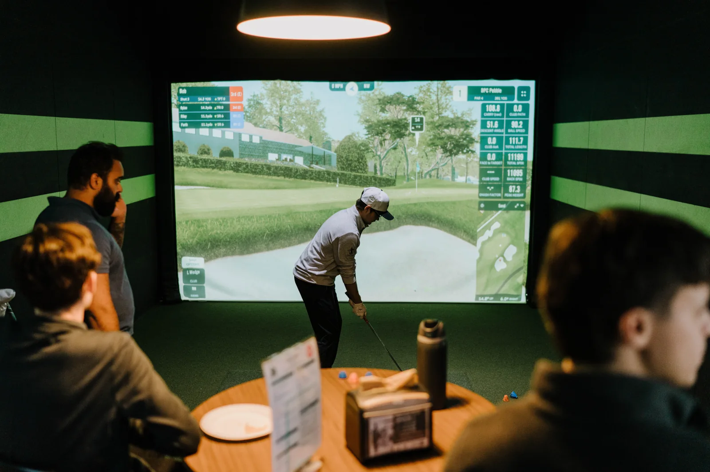

Get together
Your people.
Your new favourite place.
Birthdays, team nights, and a little friendly competition.
Plan an eventYour favourite game. Your favourite people.
Great rounds start at AVID GOLF.

Your next round starts here
Choose from over 2,800 courses on GSPro, powered by the most trusted technology in golf simulation. Whether you’re fine-tuning your swing or teeing it up with friends, there’s always a reason to play at AVID.
Find your tee timeChoose from over 2,800 courses on GSPro, or get dialed in with focused practice. Foresight Falcons deliver ball and clubhead data in every bay, giving you the feedback to fine-tune your swing and play with confidence.
GSPro
A world of courses to explore, with your next round always in reach.
Foresight Falcons · Every bay
Clubhead data adds another layer of insight into how you deliver the club at impact.
Find your rhythm. Bring your people.
Make a little more room for golf.
Get together
Birthdays, team nights, and a little friendly competition.
Plan an eventMake it a regular thing
Not at all. First-timers and regular golfers are welcome. Come for a casual round or focus on your game.
Bring your clubs if you have them. Limited rental sets are also available; call ahead to check availability.
Allow roughly 45–60 minutes per golfer for 18 holes. Your pace and game settings may change that. Bays are booked in 30-minute increments.
Open the booking calendar for available tee times, or view current hours and pricing.